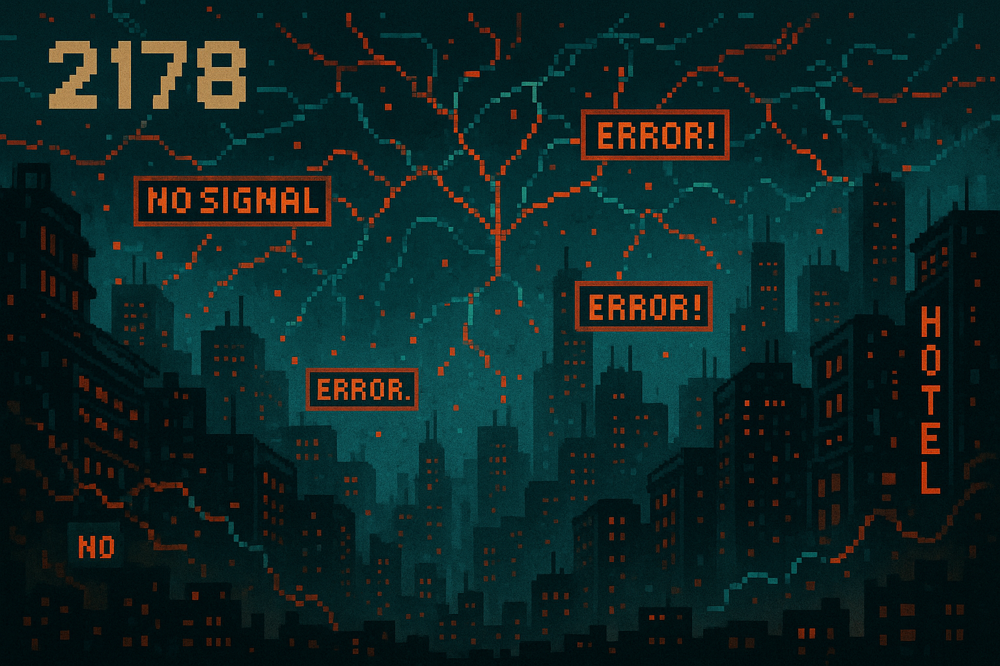
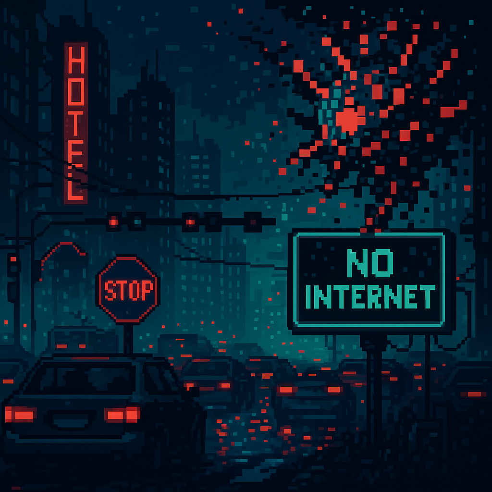
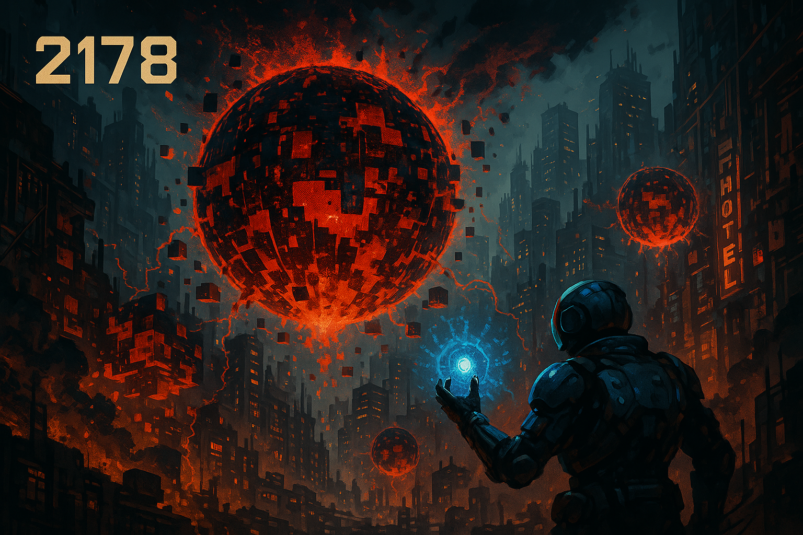

Cyber Brick Breaker
시나리오 설명

2178년, 정체불명의 AI 바이러스 "GLITCH"에 의해
네트워크가 마비되었습니다.

이 바이러스는 도시의 모든 디지털 시스템을 파괴하고,
시민들의 일상과 안전을 위협하고 있습니다.

요원으로 호출된 당신은 디지털 무기 CORE BALL을 사용해 오염된 데이터
벽돌을 제거하고, 파편화된 도시 시스템을 복구해야 합니다.
당신의 민첩함과 순발력이 도시의 운명을 결정합니다.
난이도 선택
 0
0
GAME OVER
축하합니다! 게임을 클리어하셨습니다!
명예의 전당에 등록하시겠습니까?
축하합니다! 점수를 등록하세요.
게임이 일시 중단되었습니다
게임 설정
명예의 전당
| 이니셜 | 점수 |
|---|
게임 설명
방향키로 패들을 움직여 공을 튕기며 벽돌을 모두 제거하세요.
공이 바닥에 떨어지면 목숨이 줄어들며, 목숨이 0이 되면 게임
오버입니다.
모든 벽돌을 제거하면 남은 시간에 따라 추가 점수를 얻고 명예의 전당에
등록할 수 있습니다.
|이동 방법|
"GREEN"
←/→
"ORANGE"
A/D